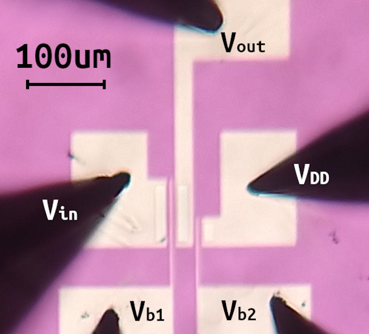
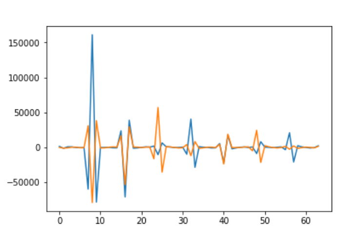
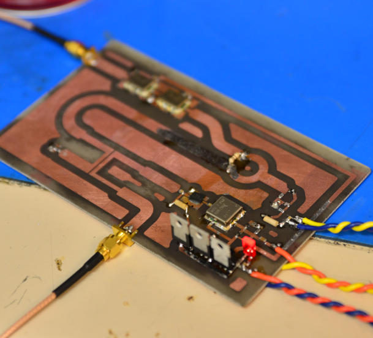
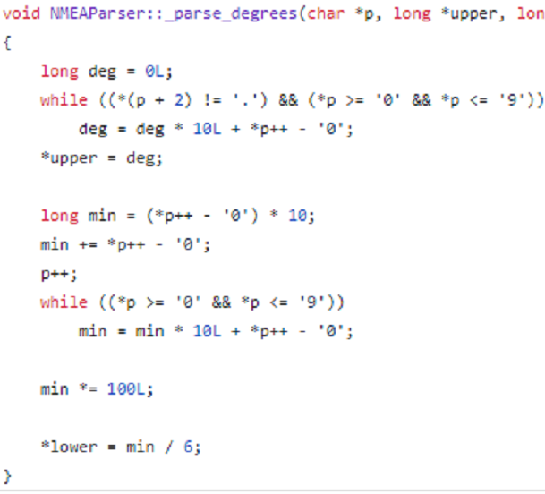
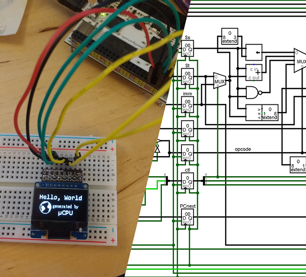

Fabrication, analysis and modeling of an InGaZnO TFT common-gate amplifier.

Frequency-based pitch detection, phase vocoding, and FM synthesis on a Pynq-Z2 FPGA.

Custom RF microstrip PCB and circuits for CW doppler radar.
A javascript image-generator for viewing the Mandelbrot Set and corresponding Julia Sets.

Extensible C++ library for the Skytraq Venus838 GPS receiver chipset. Supports command/ configuration of receiver operation as well as decoding of NMEA sentences (GPS data).

An 8-bit CPU/MCU designed from scratch, implemented with VHDL, and synthesized to run on a Spartan6 FPGA.